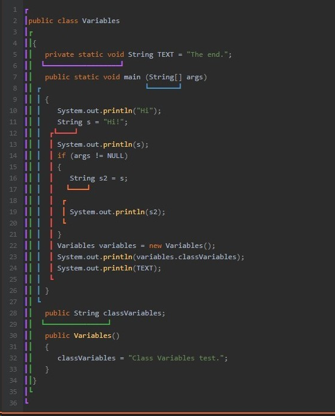

1) Переменная класса принадлежит только определенному объекту класса
2) Статическая переменная класса принадлежит всем объектам класса
3) Вызов переменной класса внутри метода осуществляеться посредством ссылки this (см. пример ниже)
3) Вызов статической переменной класса осуществляется с помощью имени класса (см. пример ниже)
Если переменная является переменной класса (пример: 4), то она привязана к конкретному объекту и существует все время, пока существует объект данного класса

1. Переменная, объявленная в методе, существует/видна с начала объявления до конца метода.
2. Переменная, объявленная в блоке кода, существует до конца этого блока кода.
3. Переменные — аргументы метода — существуют до конца выхода из метода.
4. Переменные класса/объекта существуют все время жизни содержащего их объекта. Их видимость регулируется специальными модификаторами доступа.
5. Статические переменные классов существуют все время работы программы. Их видимость также определяется модификаторами доступа.
// Пример работы с переменной класса:
package com.javarush.task.task04.task0402;
public class Solution {
public static void main(String[] args) {
Person person = new Person();
System.out.println("Age is: " + person.age);
person.adjustAge(person.age);
person.adjustAge(person.age);
System.out.println("Adjusted Age is: " + person.age);
Person person2 = new Person();
System.out.println("Age is: " + person2.age);
person2.adjustAge(person2.age);
person2.adjustAge(person2.age);
System.out.println("Adjusted Age is: " + person2.age);
}
public static class Person {
public int age = 20;
public void adjustAge(int age) {
// rewrite code:
// age = age + 20;
this.age = this.age + 20;
System.out.println("The Age in adjustAge() is " + this.age);
}
}
}
// Вывод программы:
Age is: 20
The Age in adjustAge() is 40
The Age in adjustAge() is 60
Adjusted Age is: 60
Age is: 20
The Age in adjustAge() is 40
The Age in adjustAge() is 60
Adjusted Age is: 60
-----------------------------------------------------------
Если поменять модификатор на static:
package com.javarush.task.task04.task0402;
public class Solution {
public static void main(String[] args) {
Person person = new Person();
System.out.println("Age is: " + person.age);
person.adjustAge(person.age);
person.adjustAge(person.age);
System.out.println("Adjusted Age is: " + person.age);
Person person2 = new Person();
System.out.println("Age is: " + person2.age);
person2.adjustAge(person2.age);
person2.adjustAge(person2.age);
System.out.println("Adjusted Age is: " + person2.age);
}
public static class Person {
public static int age = 20;
public void adjustAge(int age) {
// rewrite code:
// age = age + 20;
this.age = this.age + 20;
System.out.println("The Age in adjustAge() is " + this.age);
}
}
}
// Вывод:
Age is: 20
The Age in adjustAge() is 40
The Age in adjustAge() is 60
Adjusted Age is: 60
Age is: 60
The Age in adjustAge() is 80
The Age in adjustAge() is 100
Adjusted Age is: 100
— Понятно.
— Переменная метода закрывает собой переменную класса. Т.е. обращение будет происходить к переменной метода. Но к переменной класса тоже можно обратиться, только более сложным способом.
|
Статическая переменная класса ClassName.variableName //Примеры:
Cat.catsCount |
Обычная переменная класса this.variableName //Примеры:
this.catsCount |
— А что ещё за статические методы и статические переменные?
— Статические методы и переменные привязаны не к объектам класса, а непосредственно к самому классу. Т.е. если мы создадим 10 объектов класса Variables из примера в самом начале уровня, у нас будет 10 переменных classVariable (по одной на каждый объект) и всего одна общая переменная TEXT.
— У меня тут вопрос.
— А чем отличаются статические и нестатические методы?
— Давай рассмотрим, как работает обычный нестатический метод:
|
Как выглядит код Cat cat = new Cat(); String name = cat.getName(); cat.setAge(17); cat.setChildren(cat1, cat2, cat3); |
Что происходит на самом деле Cat cat = new Cat(); String name = Cat.getName(cat); Cat.setAge(cat,17); Cat.setChildren(cat, cat1, cat2, cat3); |
— При вызове метода в виде «объект» точка «имя метода», на самом деле вызывается метод класса, в который первым аргументом передаётся тот самый объект. Внутри метода он получает имя this. Именно с ним и его данными происходят все действия.
— Нифига себе. Так вот как, оказывается, оно все работает!
— А вот как работает статический метод:
|
Как выглядит код Cat cat1 = new Cat(); Cat cat2 = new Cat(); int catCount = Cat.getAllCatsCount(); |
Что происходит на самом деле Cat cat1 = new Cat(); Cat cat2 = new Cat(); int catCount = Cat.getAllCatsCount(null); |
— При вызове статического метода, никакого объекта внутрь не передаётся. Т.е. this равен null, поэтому статический метод не имеет доступа к нестатическим переменным и методам (ему нечего передать в такие методы в качестве this).
— Хм. Вроде понятно. Хотя как-то поверхностно.
— А вот и дядя Диего… С его задачками.